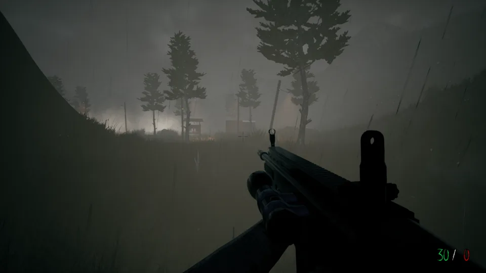
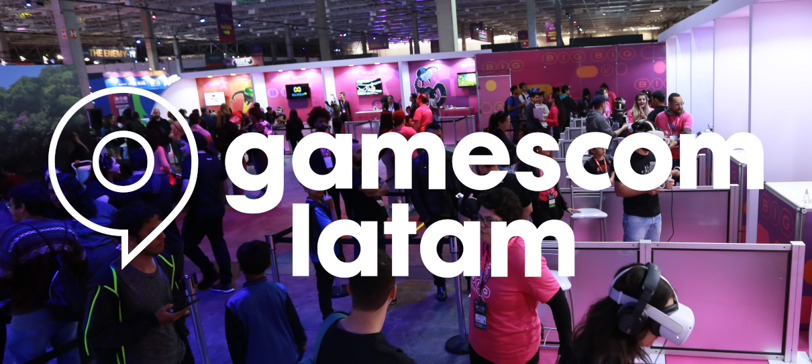

Pokémon 25 anos: dez curiosidades da franquia
:format(webp) "Pokémon Legends: Arceus em terceira pessoa")
O festival INDIE Live Expo segue destacando centenas de projetos criativos, incluindo produções nacionais de destaque.

"Valeu cada hora jogada": Subnautica está por menos de R$ 40 no Steam — mas por tempo limitado
![Esta é uma imagem em primeira pessoa do jogo Subnautica, ambientada no fundo do mar.
No canto inferior direito, o jogador segura uma ferramenta futurista branca e azul (um rifle de estase/ferramenta de escaneamento).
À esquerda, emergindo da água turquesa, há uma criatura marinha gigantesca e assustadora chamada Reaper Leviathan — ela é vermelha e branca, tem mandíbulas abertas com garras ao redor do rosto e parece estar atacando o jogador.
O cenário ao redor é um ecossistema subaquático cheio de cogumelos gigantescos de coral e luzes bioluminescentes azuis brilhantes.](https://sm.ign.com/t/ign_br/screenshot/default/captura-de-tela-2026-05-21-095028_pguk.960.png "Jogo Subnautica")
Wolfstride: Estiloso indie brasileiro é feito por irmãos daltônicos

RPG online é acessível para pessoas com deficiência visual

Darkness Falls: O jogo de terror brasileiro que você precisa conhecer

LORT é o 1º jogo do novo estúdio indie fundado por ex-funcionários da Epic Games
![Esta é uma captura de tela em terceira pessoa de um videogame de RPG/ação com estilo estilizado e colorido em meio a um campo verde. No centro, o personagem do jogador (um arqueiro de roupa verde e chapéu) está de costas abrindo um baú de madeira, do qual disparam vários feixes de luz amarela e verde brilhantes, enquanto a tela exibe uma interface cheia de detalhes: barra de vida (75/100), inventário de habilidades no rodapé, lista de itens e retratos de aliados no canto esquerdo, e uma missão ativa no canto superior direito escrita](img/lort_screenshot_3__ejln9w2tr.jpg "LORT")
"Melhoraram muito", diz Shuhei Yoshida sobre jogos indies na gamescom latam

Somerville revela data de lançamento em novo trailer

Apresentação Nintendo Indie World Showcase é anunciada para quarta (09)